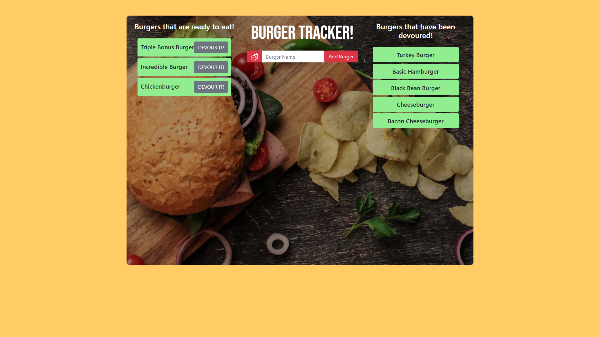

a burger logger made with MySQL, Node, Express, Handlebars and a homemade ORM (yum!)
Burger Tracker! is a restaurant app that lets users input the names of burgers they'd like to eat. Whenever a user submits a burger's name, the app will display the burger on the left side of the page -- waiting to be devoured. Each burger in the waiting area also has a Devour it! button. When the user clicks it, the burger will move to the right side of the page.
A bootcamp assignment to create a burger logger using MySQL, Node, Express, Handlebars and a homemade ORM. Built following the MVC design pattern; using Node and MySQL to store, query and route data, and Handlebars to generate the HTML. jQuery, Google Fonts and Ionicons were also used in app production.